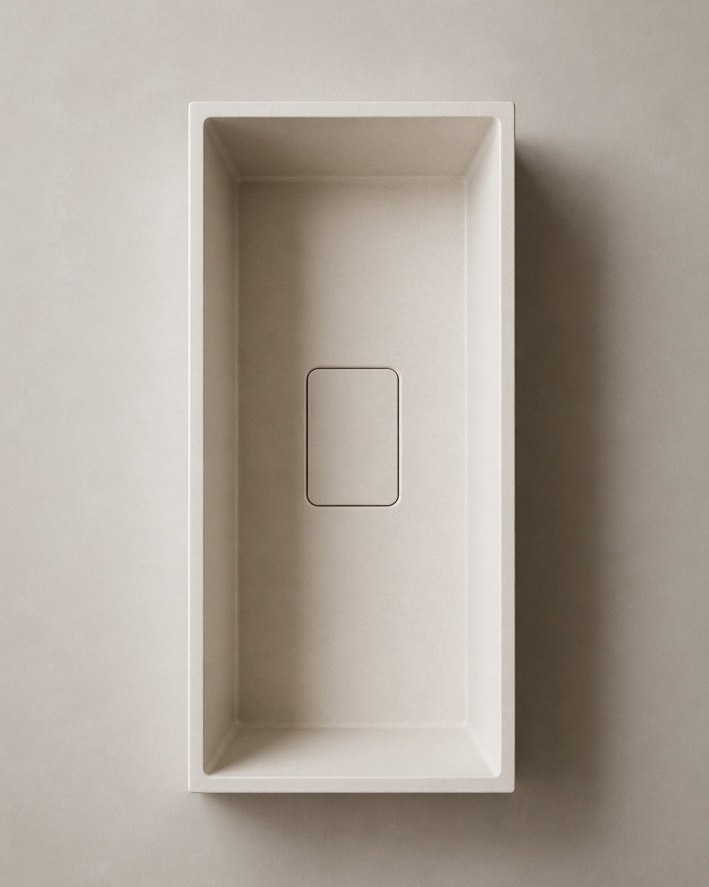
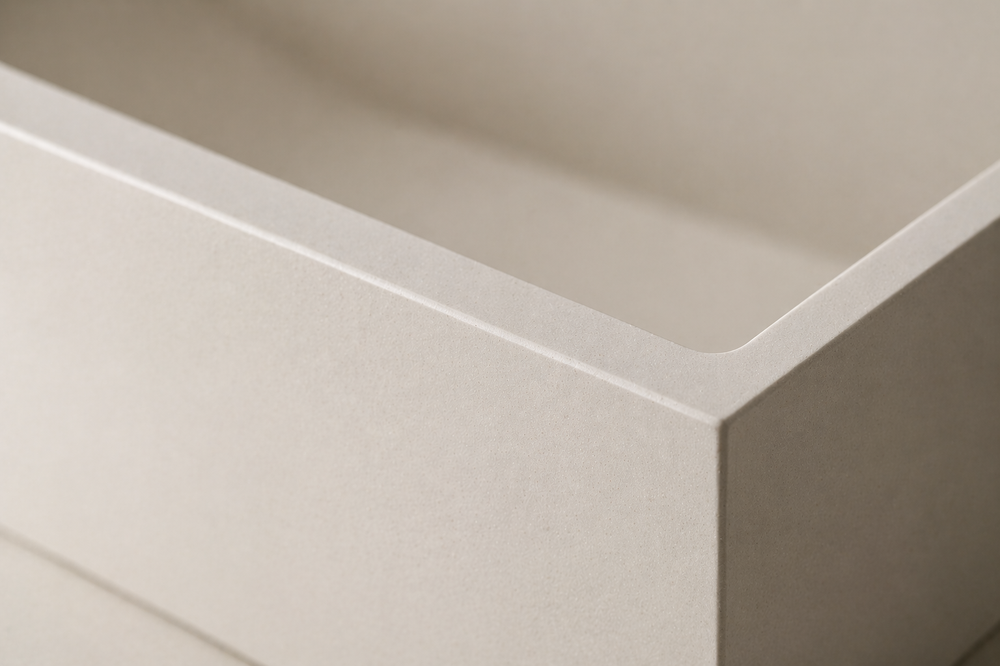
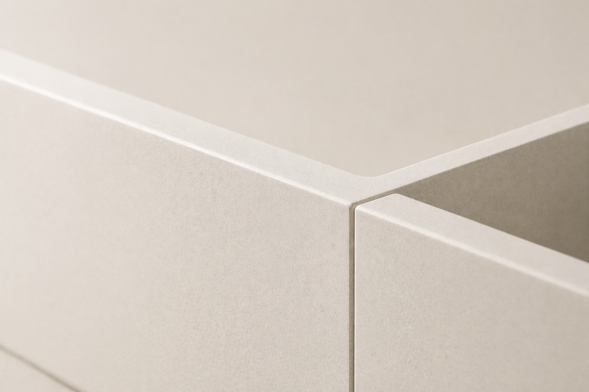

London — Bespoke Studio
Bespoke Porcelain Sinks. Crafted around your space.
We design and craft bespoke porcelain sinks and premium tiled surfaces for interiors that value detail, balance, and long-lasting beauty.
Signature Service
Porcelain sinks, drawn to the millimetre.
Each sink is tailored to its setting, with careful attention to dimension, finish, and installation so the final piece feels precise, natural, and fully at home in the space.

-
01
Custom Dimensions
Tailored to the proportions and layout of your space.
-
02
Refined Finishes
Chosen to complement the surrounding palette and surfaces.
-
03
Integrated Detailing
Clean lines, precise joins, and a seamless visual flow.
-
04
Considered Installation
Designed with both beauty and practical use in mind.


Surfaces & Finishes
Considered surfaces, from floor to feature wall.
From bathrooms and splashbacks to feature walls and refined flooring, we shape surfaces with a focus on proportion, material harmony, and long-term visual calm.
-
01
Large Format
TilingFor calm, architectural surfaces with fewer joins and a more seamless finish.
-
02
Wet Room &
Shower WallsDesigned for durability, balance, and a refined everyday experience.
-
03
Vanity &
Basin AreasTailored surface detailing around sinks, mirrors, and fitted elements.
-
04
Feature
WallsQuiet focal points that bring depth, texture, and material presence.
-
05
Floors
Carefully laid surfaces that ground the space with consistency and flow.
-
06
Surface
DetailingEdges, transitions, and finishing touches handled with precision.
Selected Works
Selected Works
A curated selection of bespoke sinks, refined bathroom compositions, and premium tiling details.
Projects
View the wider portfolio
Browse bespoke sinks, bathroom compositions, and premium tiling details.
Why Artiling Studio
Quiet luxury lives in the details that most never notice.
From alignment and edge finishing to tone matching and visual balance, every decision is made to create surfaces that feel calm, resolved, and built to last.
-
01
Precisely judged proportions
Every surface is considered in relation to the room, the light, and the elements around it.
-
02
Refined material pairing
Finishes are chosen for harmony, contrast, and long-term visual balance.
-
03
Clean detailing throughout
Edges, joins, and transitions are handled with care so the final result feels seamless and intentional.
-
04
Built for daily use
Beautiful surfaces still need to function well, wear well, and feel right in everyday life.
The Process
Four calm steps.
From first enquiry to final installation, our process is shaped to feel clear, considered, and quietly efficient.
-
01
Initial Enquiry
Tell us about your space, your needs, and the kind of finish you have in mind.
-
02
Design Direction
We shape the right approach around proportion, materials, and how the surface will live in the room.
-
03
Specification & Planning
Dimensions, finishes, and installation details are resolved with care before work begins.
-
04
Making & Installation
The final result is crafted and fitted with precision, ready to feel fully at home in the space.
The Studio
A London studio for quietly bespoke surfaces.
Artiling Studio brings together bespoke porcelain sinks, refined tiling, and considered surface work shaped around the character of each space. We focus on calm materials, precise detailing, and finishes that feel quietly resolved rather than overstated.
Based in London, we work with homeowners, designers, and hospitality spaces looking for a more tailored approach to surfaces, where proportion, texture, and installation are treated with equal care.
Enquiries
Tell us about your project.
Whether you’re designing a new bathroom, planning a wet room or commissioning a bespoke porcelain sink, we’d be glad to hear from you.